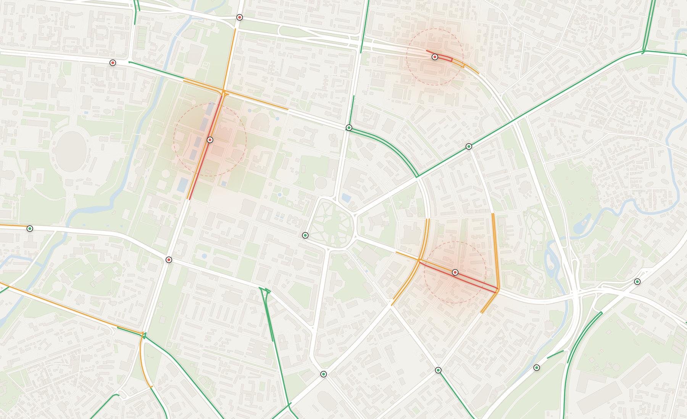

Aqlli svetofor
Har chorrahada o‘qitilgan DQN agenti: 3 ta kirish, 4 ta harakat, 500 epizodlik tajriba.

GPS ma’lumotlari, chuqur o‘rganish (DQN) va real vaqt tahlili har bir chorrahada yashil chiroq qancha yonishini o‘zi hal qiladi.

[0.42, 0.18, 0.3]Q-qiymatlar
So‘nggi hodisalar
Ochiq texnologiyalar
asosida qurilgan

Toshkent yo‘llari taxminan 400 ming mashinaga mo‘ljallangan, ammo ularda 770 mingdan ortiq transport harakatlanadi. Har 30 soniyada ko‘r-ko‘rona almashadigan svetofor bunday oqimga ulgurmaydi. Oqim har bir chorrahadagi navbatni ko‘radi va yashil chiroqni kerakli yo‘nalishga, kerakli vaqtga beradi.
Qanday ishlashini ko‘rishRaqamlar loyihaning nazariy tadqiqotidagi baholardan olingan.
Mashinalar va telefonlardan GPS koordinatalari keladi. Ular OpenStreetMap’dagi haqiqiy Toshkent yo‘llariga bog‘lanadi.
lat, lng, tezlik → yo‘l segmenti
DBSCAN algoritmi mashinalar zich to‘plangan joylarni topadi. Natijada shahar xaritasida tirbandlik zonalari belgilanadi.
DBSCAN(eps, min_samples) → zonalar
Har bir chorrahada DQN neyron tarmog‘i navbatlarni ko‘rib, to‘rtta harakat ichidan eng foydalisini tanlaydi.
[NS, EW, vaqt] → argmax Q(s, a)
Svetofor fazasi almashadi. Tez yordam yo‘lga chiqsa, marshrutdagi chorrahalar oldindan yashilga o‘tadi.
faza ← qaror · yashil to‘lqin
Har chorrahada o‘qitilgan DQN agenti: 3 ta kirish, 4 ta harakat, 500 epizodlik tajriba.
Zichlikka asoslangan klasterlash shovqindan haqiqiy tirbandlikni ajratadi.
Marshrutdagi svetoforlar mashina yetib kelishidan 30 soniya oldin yashilga o‘tadi.
Har qanday telefon brauzer orqali tizimga real mashina sifatida qo‘shila oladi.
41.3111° N · 69.2797° E
Haydovchi oddiy tilda so‘raydi — tizim xaritadagi jonli ma’lumot asosida javob beradi.
Chilonzorda hozir tirbandlik bormi?
Ha, Chilonzor metrosi atrofida o‘rtacha. Bunyodkor shoh ko‘chasi orqali borsangiz, taxminan 6 daqiqa tejaysiz.
Agent avval tasodifiy harakat qilib o‘rganadi (ε = 1.0). Har epizodda ε 1% ga kamayadi va taxminan 459-epizodda 0.01 ga yetadi. Barqarorlik uchun Huber yo‘qotish funksiyasi, target tarmoq va tajriba xotirasi ishlatiladi.
ε = 1.000Jonli xaritani oching, chorrahani tanlang va AI qanday qaror qabul qilayotganini o‘z ko‘zingiz bilan kuzating.